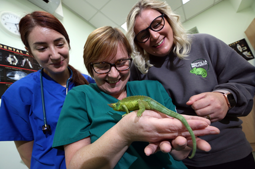

About us

Basil's Rescue has been running since 1996 and has taken in, rehabilitated, and rehomed hundreds of unwanted reptiles. Lack of
funds spawned an expansion to include reptile events for schools, fetes, birthday,s and other groups in 2008. This is aimed at educating children and others
about reptiles and other exotic animals. We are liability insured for 5m, hold a performing animals license and pet shop license as well as CRB checked. We offer
local schools anything from a one-hour visit to one class or a workshop for the day in a central area.
Our summer fetes, fairs, and Christmas fairs certainly attract the crowds. If your think your child’s school may want a visit get in contact soon. For birthdays or other parties with a more exotic feel, we can do hour handling sessions for afternoon shows with a larger amount of animals for the afternoon for 2 or more experienced handlers.
Our summer fetes, fairs, and Christmas fairs certainly attract the crowds. If your think your child’s school may want a visit get in contact soon. For birthdays or other parties with a more exotic feel, we can do hour handling sessions for afternoon shows with a larger amount of animals for the afternoon for 2 or more experienced handlers.
Arranging a reptile encounter

We are liability insured for 5million and we hold a performing animals licence, pet shop licence and an animal transporter licence. All of our team
are fully CRB checked, so you’ll be in safe hands when you choose Berkshire Reptile Encounters. With a team of professional animal handlers, we are able to offer local
schools anything from a one hour visits per class or a workshop for the day in a central area of the school.
Our summer fetes, fairs, Christmas fairs certainly attract the crowds and we have developed a well-known reputation for the sessions that our animal handlers hold. If your think your child’s school may want a visit, then why not let them know about us or simply send us their details and we’ll be happy to introduce ourselves.
If you’re interested in having Basil's Rescue attend for a birthday or any other type of party, then be sure to get in touch. We can help to add a more exotic feel to any party. Our team are able to provide hour handling sessions to full afternoon shows. From a select few animals to larger groups of animals, our experienced handlers can cater to any requirement. Be sure to check out our services page for more information.
Our summer fetes, fairs, Christmas fairs certainly attract the crowds and we have developed a well-known reputation for the sessions that our animal handlers hold. If your think your child’s school may want a visit, then why not let them know about us or simply send us their details and we’ll be happy to introduce ourselves.
If you’re interested in having Basil's Rescue attend for a birthday or any other type of party, then be sure to get in touch. We can help to add a more exotic feel to any party. Our team are able to provide hour handling sessions to full afternoon shows. From a select few animals to larger groups of animals, our experienced handlers can cater to any requirement. Be sure to check out our services page for more information.